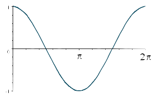
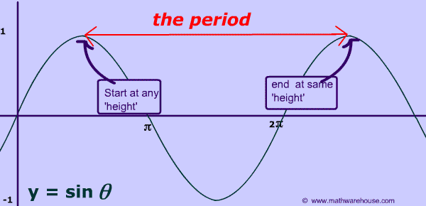
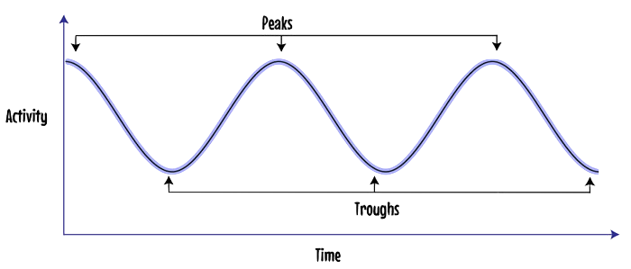
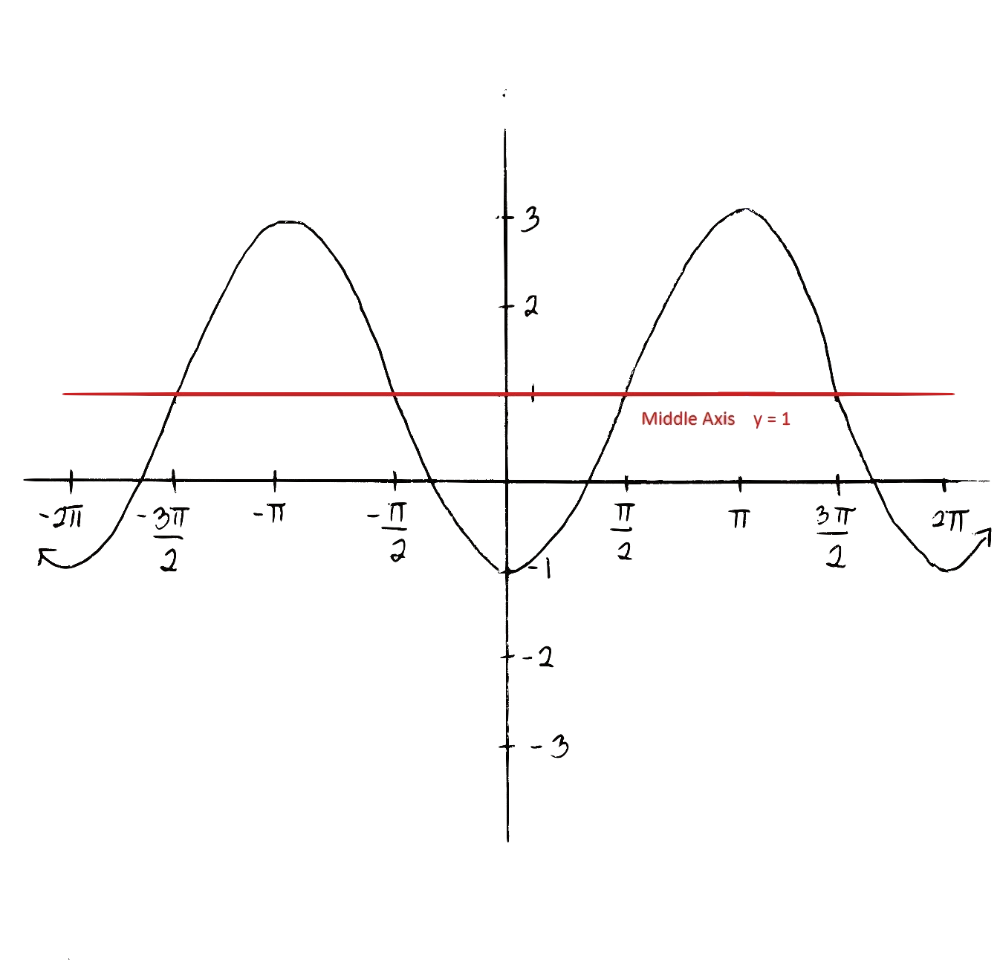
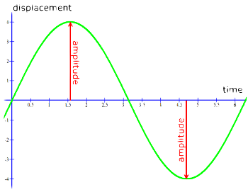

Introduction
-
What is a Sinusoidal Function:
A sinusoidal function is a function that has a pattern or a cycle that repeats at regular intervals. The trigonometric functions are sinusoidal.
Characteristics
-
Cycle:
The cycle of a sinusodial function is used to descride one complete pattern.
 -
Period:
The period of a sinusodial function is the horizontal length of one cycle. This can be calulated by finding the difference between the starting and end point of one cycle.
 -
Peaks/Troughs:
The peak of a sinusodial function is the maximum point on the graph. The trough is the minimum point of the graph.
 -
Equation of the Axis:
The equation of axix of a sinusodial function is the half way between the maximum(peak) and minimum(trough) points on the graph. The equation of the axis is y = (MaxValue + MinValue)/2.
 -
Amplitude:
The amplitude of a sinusodial function is half of the distance between the maximum(peak) and minimum(trough) points on the graph. The amplitude can be found using the equation a = (MaxValue - MinValue)/2.
